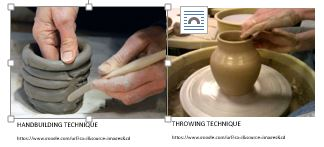
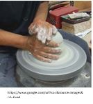

A GUIDE TO THROWING ON THE WHEEL
Throwing is commonly defined as “the act of propelling something with a great force through the air.” Now in the ceramic world, “throwing” holds a whole different meaning. In this context, it is the entire activity of shaping one’s clay on the potter’s wheel.
Throwing is thought to be a bit more complex than hand building, having various steps one must follow to successfully complete such a task, however, it more often yields a cleaner & symmetrical end result, which leads to its great appeal.

This technique is most commonly used for creating dishware, including plates, bowls, cups, vases, etc. This is due to its rotating ability to create perfectly rounded cylindrical forms. To successfully create something as simple as a standing cylinder cup, one must refer to the following steps, but first, one must ensure they have the right tools.
SOME NECESSARY TOOLS
A clean wheel surface/ a clean surface to wedge
Small bucket of water & sponge
Needle tool
Wooden trimming tool
Wire tool
STEP 1- WEDGE YOUR CLAY
Before you even sit down at your wheel, you must wedge the clay you will be using. Wedging is defined as the “process of kneading the clay with one’s hands to remove air bubbles and ensure homogenous mass.” This is highly important since this step helps to prep your clay through compacting it, aligning its particles and creating uniformity throughout the whole form
You want to complete this kneading action on a smooth, cleaned surface. Work the clay repetitively for as long as desired (I personally do 50 counts of kneading minimum, depending on amount of clay). Once the clay has been wedged, form it into a ball shape.
STEP 2- CENTERING ON THE WHEEL
I personally have seen this step done multiple ways; what I’m suggesting is my own personal tactic, so until you find a way that works best for you, I suggest the following.
Using medium force, hit the ball of clay as close to the wheel’s center as possible. Now you want to tuck your right elbow in between your right leg and your torso so your forearm is kind of resting against your thigh. This will help keep your hand steady while you work with the rotating clay.
Wet your clay with your sponge (the clay should be kept wet this entire time). If it dries out, it will catch in your hands easily and cause it to go off center. Keep the sponge wet & placed in your left hand for now.

Using your right hand, still tucked against your torso, push the clay toward the center of the wheel. Interchanging, use your left hand (with the sponge) to push the clay downwards. Repeat this action while wheel spins until centered.
The clay is perfectly centered once you can gently lay your finger against it without the finger bumping in or out. Visually, it will look like the clay isn’t even moving, while the wheel still rotates.
STEP 3- OPENING & FORMING THE BOTTOM
While the clay is rotating, locate the center of the wheel/ clay ball. Take your thumb of your right hand and place it at the center point. Apply pressure downwards with your left hand, creating a donut shape from above.
Push down until there is approximately 1/2 an inch of clay at the bottom. This will form the floor of your cup. If you aren’t sure the bottom’s thickness, then stop the wheel and measure it with your needle tool.
With the wheel spinning, pull your thumb outwards, towards yourself. Be sure to keep your right palm applied to the outer surface of the clay. Widen the opening to desired width, but be sure not to make the base too narrow; you will need to be able to fit your hand inside the opening as it grows taller.
STEP 4- START PULLING
Keep your wheel rotating & clay continuously wet as you continue on. For this next step your left hand will go inside the opening while your right will stay on the outside, still tucked against your torso for stability.
Reduce the speed of the wheel. Your left forefinger will go inside, touching the bottom base of the wall, lightly resting on the floor of the cup; meanwhile you right hand will touch the same spot on the outside of the cup wall. Be sure to rest your left thumb on top of you right hand for further connection.
Keeping your hands connected, apply slight pressure, pinching clay between your forefingers and begin to move straight upward. By doing this, you thin the walls and stretch them, adding height. Continue for desired height, being aware of overall thickness.
Be sure to use your sponge and soak up all the water puddled inside the cup afterwards to avoid future cracking, as well as, remember to compress your lip; this includes, compressing the top gently to smooth out & solidify your cup’s rim.
STEP 5- TRIM & CUT FINAL PRODUCT OFF WHEEL
While the wheel is still slowly spinning, use the wedge-shaped end of your wooden trimming tool to trim the bottom of you cup; this includes the excess clay you were unable to pinch/ pull. Gently rotate the wheel while removing the trimmings away from your cup.
Keeping your cutting wire as taut as possible, stretch it to either side of the wheel head on the other side of you cup. Rotate the wheel very slowly, keeping the wire slightly touching the wheel surface. Pull the wire toward yourself in one smooth motion, scraping the surface of the wheel and crossing under the cup. Now you may stop the wheel & carefully remove the cylindrical product.
Place the piece somewhere out of harm’s way, lightly covered in plastic. The plastic will ensure slow, safe and even drying. The cup will be ready for its bisque firing once it has reached its bone-dry phase.